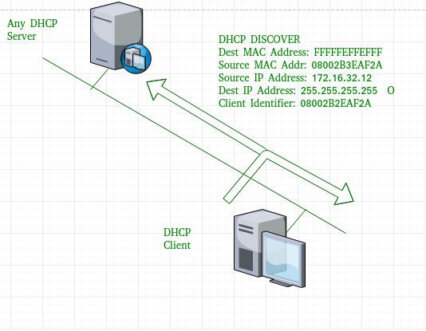

Prerequisite – Protocols in Application Layer
Dynamic Host Configuration Protocol(DHCP) is an application layer protocol which is used to provide:
- Subnet Mask (Option 1 – e.g., 255.255.255.0)
- Router Address (Option 3 – e.g., 192.168.1.1)
- DNS Address (Option 6 – e.g., 8.8.8.8)
- Vendor Class Identifier (Option 43 – e.g., ‘unifi’ = 192.168.1.9 ##where unifi = controller)
DHCP is based on a client-server model and based on discovery, offer, request, and ACK.
DHCP port number for server is 67 and for the client is 68. It is a Client server protocol which uses UDP services. IP address is assigned from a pool of addresses. In DHCP, the client and the server exchange mainly 4 DHCP messages in order to make a connection, also called DORA process, but there are 8 DHCP messages in the process.
These messages are given as below:
- DHCP discover message –
This is a first message generated in the communication process between server and client. This message is generated by Client host in order to discover if there is any DHCP server/servers are present in a network or not. This message is broadcasted to all devices present in a network to find the DHCP server. This message is 342 or 576 bytes long

As shown in the figure, source MAC address (client PC) is 08002B2EAF2A, destination MAC address(server) is FFFFFFFFFFFF, source IP address is 0.0.0.0(because PC has no IP address till now) and destination IP address is 255.255.255.255 (IP address used for broadcasting). As the discover message is broadcast to find out the DHCP server or servers in the network therefore broadcast IP address and MAC address is used.
- DHCP offer message –
The server will respond to host in this message specifying the unleased IP address and other TCP configuration information. This message is broadcasted by server. Size of message is 342 bytes. If there are more than one DHCP servers present in the network then client host will accept the first DHCP OFFER message it receives. Also a server ID is specified in the packet in order to identify the server.
Now, for the offer message, source IP address is 172.16.32.12 (server’s IP address in the example), destination IP address is 255.255.255.255 (broadcast IP address) ,source MAC address is 00AA00123456, destination MAC address is FFFFFFFFFFFF. Here, the offer message is broadcast by the DHCP server therefore destination IP address is broadcast IP address and destination MAC address is FFFFFFFFFFFF and the source IP address is server IP address and MAC address is server MAC address.
Also the server has provided the offered IP address 192.16.32.51 and lease time of 72 hours(after this time the entry of host will be erased from the server automatically) . Also the client identifier is PC MAC address (08002B2EAF2A) for all the messages.
- DHCP request message –
When a client receives a offer message, it responds by broadcasting a DHCP request message. The client will produce a gratitutous ARP in order to find if there is any other host present in the network with same IP address. If there is no reply by other host, then there is no host with same TCP configuration in the network and the message is broadcasted to server showing the acceptance of IP address .A Client ID is also added in this message.
Now, the request message is broadcast by the client PC therefore source IP address is 0.0.0.0(as the client has no IP right now) and destination IP address is 255.255.255.255 (broadcast IP address) and source MAC address is 08002B2EAF2A (PC MAC address) and destination MAC address is FFFFFFFFFFFF.
Note – This message is broadcast after the ARP request broadcast by the PC to find out whether any other host is not using that offered IP. If there is no reply, then the client host broadcast the DHCP request message for the server showing the acceptance of IP address and Other TCP/IP Configuration.
- DHCP acknowledgement message –
In response to the request message received, the server will make an entry with specified client ID and bind the IP address offered with lease time. Now, the client will have the IP address provided by server.
Now the server will make an entry of the client host with the offered IP address and lease time. This IP address will not be provided by server to any other host. The destination MAC address is FFFFFFFFFFFF and the destination IP address is 255.255.255.255 and the source IP address is 172.16.32.12 and the source MAC address is 00AA00123456 (server MAC address).
- DHCP negative acknowledgement message –
Whenever a DHCP server receives a request for IP address that is invalid according to the scopes that is configured with, it send DHCP Nak message to client. Eg-when the server has no IP address unused or the pool is empty, then this message is sent by the server to client. - DHCP decline –
If DHCP client determines the offered configuration parameters are different or invalid, it sends DHCP decline message to the server .When there is a reply to the gratuitous ARP by any host to the client, the client sends DHCP decline message to the server showing the offered IP address is already in use. - DHCP release –
A DHCP client sends DHCP release packet to server to release IP address and cancel any remaining lease time. - DHCP inform –
If a client address has obtained IP address manually then the client uses a DHCP inform to obtain other local configuration parameters, such as domain name. In reply to the dhcp inform message, DHCP server generates DHCP ack message with local configuration suitable for the client without allocating a new IP address. This DHCP ack message is unicast to the client.
Note – All the messages can be unicast also by dhcp relay agent if the server is present in different network.
Advantages – The advantages of using DHCP include:
- centralized management of IP addresses
- ease of adding new clients to a network
- reuse of IP addresses reducing the total number of IP addresses that are required
- simple reconfiguration of the IP address space on the DHCP server without needing to reconfigure each client
The DHCP protocol gives the network administrator a method to configure the network from a centralised area.
With the help of DHCP, easy handling of new users and reuse of IP address can be achieved.
Disadvantages – Disadvantage of using DHCP is:
- IP conflict can occur
References –
DHCP – help.ubnt
DHCP – docs.oracle